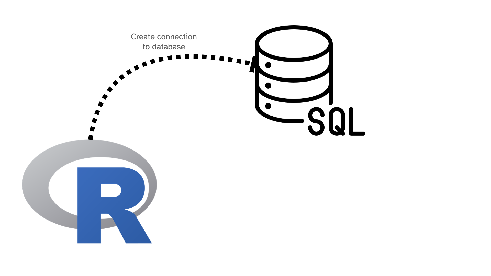
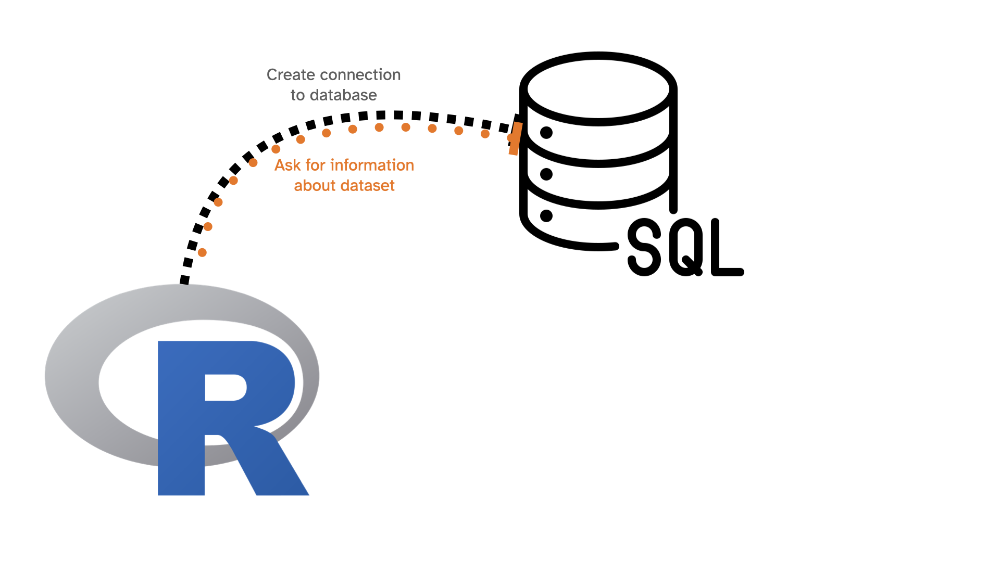
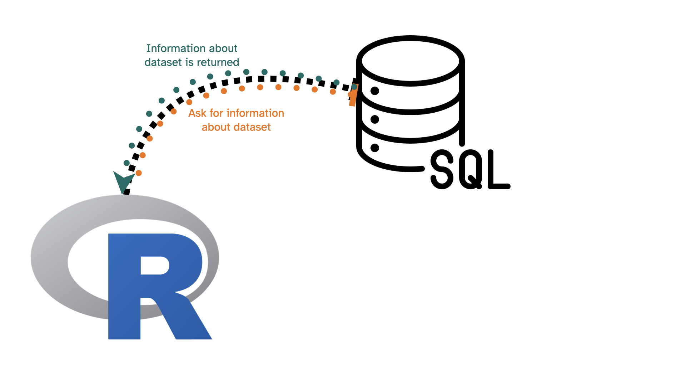
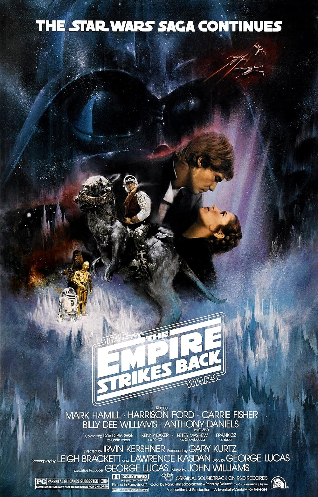
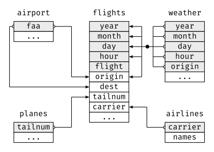

03:00
Day 26
Carleton College
Stat 220 - Fall 2026
Using nycflights23::flights, answer the following using {dplyr} code
03:00
nycflights23::flights is a subset of all flights data[1] "tbl_MariaDBConnection" "tbl_dbi" "tbl_sql"
[4] "tbl_lazy" "tbl" flights with {dplyr} commands:# Source: SQL [?? x 1]
# Database: mysql [mdsr_public@mdsr.crcbo51tmesf.us-east-2.rds.amazonaws.com:3306/airlines]
year
<int>
1 2013
2 2014
3 2015


is generating the following SQL code:
and sending the request to the SQL server where the data lives. The result then gets sent back to R
SQL stands for Structured Query Language and is a language for database management systems developed in the 1970’s
There are many “dialects” of SQL, but they’re all very similar
The “dialect” we’ll use is MySQL/MariaDB
To run SQL in R, use
SELECT and FROM
are required for every query. The simplest query we can write is:
which means “select everything from the flights dataset”.
LIMITis similar to head() or slice()
origin
1 ABE
2 ABI
3 ABQ
4 ABR
5 ABYRun the following code to connect to the imdb database. It lives on a shared, read-only server, so please keep your queries small (use LIMIT).
Check that your connection works by running the following “query”
What kind_type number corresponds to “movies”?
01:00
kind_type is a “lookup table” for the kind_id variable
id kind
1 1 movie
2 2 tv series
3 3 tv movie
4 4 video movie
5 5 tv mini series
6 6 video game
7 7 episodeWHERE is similar to filter()

id title imdb_index kind_id production_year
1 476823 The Empire Strikes Back <NA> 7 1980
2 461950 The Empire Strikes Back <NA> 7 2015
3 919851 The Empire Strikes Back <NA> 7 2015
4 924929 The Empire Strikes Back <NA> 7 2017
5 1751199 The Empire Strikes Back <NA> 7 2003
6 1890901 The Empire Strikes Back <NA> 7 2016
7 2530173 The Empire Strikes Back <NA> 7 2005
8 2780701 The Empire Strikes Back <NA> 7 1986
9 2916719 The Empire Strikes Back <NA> 7 2012
10 4346960 The Empire Strikes Back <NA> 6 1992 kind_id = 1
[1] id title imdb_index kind_id production_year imdb_id phonetic_code
[8] episode_of_id season_nr episode_nr series_years md5sum
<0 rows> (or 0-length row.names)Now we get zero results!
LIKE
% is the “wildcard” character in SQL id title imdb_index kind_id production_year imdb_id phonetic_code
1 4260164 Star Wars: Episode V - The Empire Strikes Back <NA> 1
2 4346961 The Empire Strikes Back Part II (Parody) <NA> 1 ORDER BY is like arrange()
title kind_id production_year
1 Star Wars: Episode V - The Empire Strikes Back 1 1980
2 The Empire Strikes Back Part II (Parody) 1 2016title tablename tableid (you may find more than one row: write down all of them)Note: The first few rows/columns of the name table look like this:
id name imdb_index imdb_id gender name_pcode_cf
1 235 -Alverio, Esteban Rodriguez <NA> NA m A4162
2 921 Aaberge, Theodor Olai <NA> NA m A1623
3 1698 Aarudra <NA> NA m A636
4 1189 Aaltonen, Miro <NA> NA m A4356
5 2755 Abbas, Mubasshir <NA> NA m A1251
6 2821 Abbasi, Kurosch <NA> NA m A1262
7 779 A., Narayana Rao <NA> NA m A565603:00
The following code chunk lists all of the tables available in the IMDB
[1] "title" "link_type" "person_info" "movie_info"
[5] "movie_companies" "complete_cast" "movie_keyword" "company_type"
[9] "keyword" "role_type" "movie_link" "cast_info"
[13] "company_name" "kind_type" "aka_title" "char_name"
[17] "name" "info_type" "comp_cast_type" "aka_name"
[21] "movie_info_idx" and we can pull out fields (columns) in each table with dbListFields
[1] "id" "title" "imdb_index" "kind_id"
[5] "production_year" "imdb_id" "phonetic_code" "episode_of_id"
[9] "season_nr" "episode_nr" "series_years" "md5sum" List the fields in the name, cast_info, and char_name tables. Do they have fields in common? How do you think these tables fit together?
03:00
id person_id movie_id person_role_id note nr_order role_id
1 456375 64737 4260164 77625 (uncredited) NA 1
2 831054 110718 4260164 23193 (uncredited) NA 1
3 988117 131244 4260164 149050 <NA> 8 1
4 1321284 173608 4260164 23193 (uncredited) NA 1
5 1838022 240742 4260164 366363 <NA> 25 1
6 1918455 251152 4260164 23193 (uncredited) NA 1
7 1918456 251152 4260164 380517 (uncredited) NA 1
8 1918457 251152 4260164 3008 (uncredited) NA 1
9 1918458 251152 4260164 380518 (uncredited) NA 1
10 2421549 314562 4260164 470037 (uncredited) NA 1There are 162 rows in all. Each row is one person playing one role in the movie.
Most databases contain multiple tables that are linked together via keys
# A tibble: 435,352 × 4
origin dest arr_delay sched_arr_time
<chr> <chr> <dbl> <int>
1 EWR SMF 205 3
2 JFK ATL 53 135
3 JFK BQN 34 426
4 JFK CHS 166 2352
5 EWR DTW 211 2252
6 EWR MIA -7 815
7 JFK BQN -1 949
8 EWR ORD -25 710
9 EWR IAH 68 818
10 EWR FLL -7 852
# ℹ 435,342 more rows# A tibble: 1,255 × 2
faa name
<chr> <chr>
1 AAF Apalachicola Regional Airport
2 AAP Andrau Airpark
3 ABE Lehigh Valley International Airport
4 ABI Abilene Regional Airport
5 ABL Ambler Airport
6 ABQ Albuquerque International Sunport
7 ABR Aberdeen Regional Airport
8 ABY Southwest Georgia Regional Airport
9 ACK Nantucket Memorial Airport
10 ACT Waco Regional Airport
# ℹ 1,245 more rowsMost databases contain multiple tables that are linked together via keys
# A tibble: 1,417 × 4
season castaway_id castaway city
<dbl> <chr> <chr> <chr>
1 50 US0554 Angelina <NA>
2 50 US0477 Aubry <NA>
3 50 US0682 Charlie <NA>
4 50 US0515 Chrissy <NA>
5 50 US0550 Christian <NA>
6 50 US0179 Cirie <NA>
7 50 US0277 Coach <NA>
8 50 US0031 Colby <NA>
9 50 US0666 Dee <NA>
10 50 US0668 Emily <NA>
# ℹ 1,407 more rows
JOINs in SQLcast_info with name
name role_id id
1 Anderson, Bob 1 456375
2 Austen, Alan 1 831054
3 Baker, Kenny 1 988117
4 Bear, Lightning 1 1321284
5 Boa, Bruce 1 1838022
6 Bonehill, Richard 1 1918455
7 Bonehill, Richard 1 1918456
8 Bonehill, Richard 1 1918457
9 Bonehill, Richard 1 1918458
10 Buchanan, Stephen 1 2421549
...Instead of wrapping a query in dbGetQuery(), you can write SQL directly in a SQL chunk. First connect in an R chunk (as before), then:
connection: db tells the chunk which R object holds your database connection--| (SQL comments), not #|
--| output.var: kinds to also save the result as an R data frame called kinds
You found several rows named “Davis, Viola” in name. Which id has rows in cast_info (where it is called person_id)?
Keep only her rows as an actress: role_id = 2. (role_type is the lookup table for role_id, like kind_type was for kind_id.)
Add the names of the characters she played by JOINing the char_name table (person_role_id in cast_info matches id in char_name)
05:00
COUNT()
COUNT(*) is like n(): it counts rows
n_movies
1 1061161GROUP BY gives one row per group production_year n_movies
1 2016 59702
2 2014 57983
3 2015 56561
4 2013 53855
5 2017 53459group_by() + summarize(). Other summaries: AVG(), SUM(), MIN(), MAX()
AS names the new column, and ORDER BY can sort by that nameSELECT that is not a summary must also be in GROUP BY
How many people in the name table have gender = 'f'?
For Viola Davis, how many credits as an actress does she have in each kind_id? (Check: kind_id 1, movies, should be 51. Why is that a bit more than the 49 rows in your filmography?)
05:00
SELECTFROMJOINWHEREGROUP BYHAVINGORDER BYLIMIT